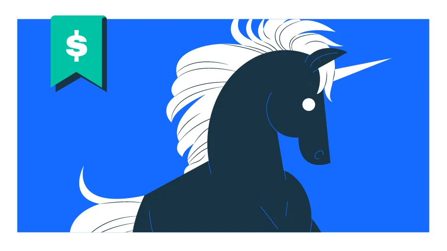

Май 2025 года добавил в реестр единорогов Crunchbase сразу 29 компаний — и ни одна из них не занимается разработкой фундаментальных ИИ-моделей. Деньги пошли туда, где модели превращаются в работающие продукты: в сервисы внедрения, автономное программирование, поиск для агентов и физическую робототехнику.
Самый крупный новый единорог в категории ИИ-развёртывания — OpenAI Deployment Company. Компания, которой меньше года, привлекла $4 млрд в раунде под руководством TPG; соинвесторами выступили Advent International, Bain Capital и Brookfield. Оценка составила $14 млрд. Большинство акций принадлежит OpenAI, которая также поглотила стартап Tomoro с его 150 инженерами, работающими непосредственно на площадках клиентов. Параллельно Anthropic оформила совместное предприятие Anthropic Applied ИИ JV с частным инвестором Blackstone Group и юридической фирмой Hellman & Friedman — каждый вложил по $300 млн, итого $1,5 млрд. Goldman Sachs и Sequoia Capital также участвовали в раунде. Цель СП — помочь корпоративным клиентам интегрировать модель Claude в операционные процессы.
| Компания | Категория | Раунд | Сумма | Оценка | Ведущий инвестор |
|---|---|---|---|---|---|
| OpenAI Deployment Company | ИИ-внедрение | PE | $4 млрд | $14 млрд | TPG |
| Anthropic Applied AI JV | ИИ-внедрение | PE | $1,5 млрд | не раскрыта | Blackstone / Hellman & Friedman |
| Hark | Робототехника | Series A | $700 млн | $6 млрд | Parkway Venture Capital |
| MiRus | Здравоохранение | Corporate | $1,5 млрд | $4,4 млрд | Boston Scientific |
| Exa | ИИ-инфраструктура | Series C | $250 млн | $2,2 млрд | Andreessen Horowitz |
| Cowboy Space | Аэрокосмос | Series B | $305 млн | $2 млрд | Index Ventures |
| Blitzy | ИИ-инфраструктура | Series A | $200 млн | $1,4 млрд | Northzone |
| Corgi Insurance | Финтех | Series B | $160 млн | $1,3 млрд | TCV |
| Tianji | Робототехника | Series B | $147 млн | $1,5 млрд | Hillhouse Capital |
| Vi Labs | Здравоохранение | — | $146 млн | $1,6 млрд | Revelstoke Capital Partners |
| OpenRouter | ИИ-инфраструктура | Series B | $113 млн | $1,3 млрд | CapitalG (Alphabet) |
| Photonic | Квантовые вычисления | Extension | $70 млн | $2 млрд | Planet First Partners |
| Skyroot Aerospace | Аэрокосмос | — | $60 млн | $1,2 млрд | GIC |
| Nord Quantique | Квантовые вычисления | — | $30 млн | $1,4 млрд | — |
Среди более узких ИИ-инфраструктурных игроков выделяется Exa — поисковый движок для ИИ-агентов, который привлёк $250 млн Series C от Andreessen Horowitz при оценке $2,2 млрд. Blitzy, двухлетний стартап из Бостона, поднял $200 млн Series A от Northzone при оценке $1,4 млрд: платформа анализирует существующие кодовые базы, строит граф знаний и автономно переписывает или тестирует сложные системы за дни вместо месяцев. OpenRouter — маршрутизатор запросов между 400+ моделями — получил $113 млн Series B от CapitalG (венчурное подразделение Alphabet) при оценке $1,3 млрд; в раунде участвовали корпоративные фонды NVentures, ServiceNow Ventures, MongoDB Ventures, Snowflake Ventures и Databricks Ventures.
Anthropic создала совместное предприятие с Blackstone и Hellman & Friedman на $1,5 млрд для внедрения Claude в корпорации.

Роботехника стала второй по значимости категорией. Hark, основанный создателем гуманоидного робота Figure Бреттом Адкоком, привлёк $700 млн Series A от Parkway Venture Capital при оценке $6 млрд — и компании нет ещё года. Она планирует разрабатывать собственные модели, обучающие данные и аппаратную часть. Китайский рынок представлен тремя новыми единорогами: Tianji (двурукие роботы, $147 млн Series B, оценка $1,5 млрд), Agilink (технологии ловкой руки, спин-офф Agibot, оценка $1 млрд) и Botshare (аренда роботов, оценка $1 млрд).
В здравоохранении выделяется MiRus — провайдер лечения сердечно-сосудистых и ортопедических заболеваний из Джорджии, получивший корпоративный раунд на $1,5 млрд от Boston Scientific при оценке $4,4 млрд. Boston Scientific сохраняет опцион на покупку технологии сердечных клапанов. Канада отметилась в квантовых вычислениях: Photonic из Ванкувера (кремниевые кубиты с фотонными интерконнектами, оценка $2 млрд) и Nord Quantique из Квебека (коррекция квантовых ошибок на уровне отдельного кубита, оценка $1,4 млрд).
На фоне новых поступлений Unicorn Board достиг совокупной стоимости $9,9 трлн. Anthropic обошла OpenAI и стала второй по оценке частной компанией после SpaceX. Обе подали конфиденциальные заявки на IPO. SpaceX готовится к листингу, который станет крупнейшим в истории: выход компании Илона Маска с частного рынка уберёт более десятой части суммарной стоимости всего реестра. Chip-компания Cerebras уже вышла на биржу в мае с оценкой $56,4 млрд — втрое выше частной оценки в $23 млрд, зафиксированной всего тремя месяцами ранее.